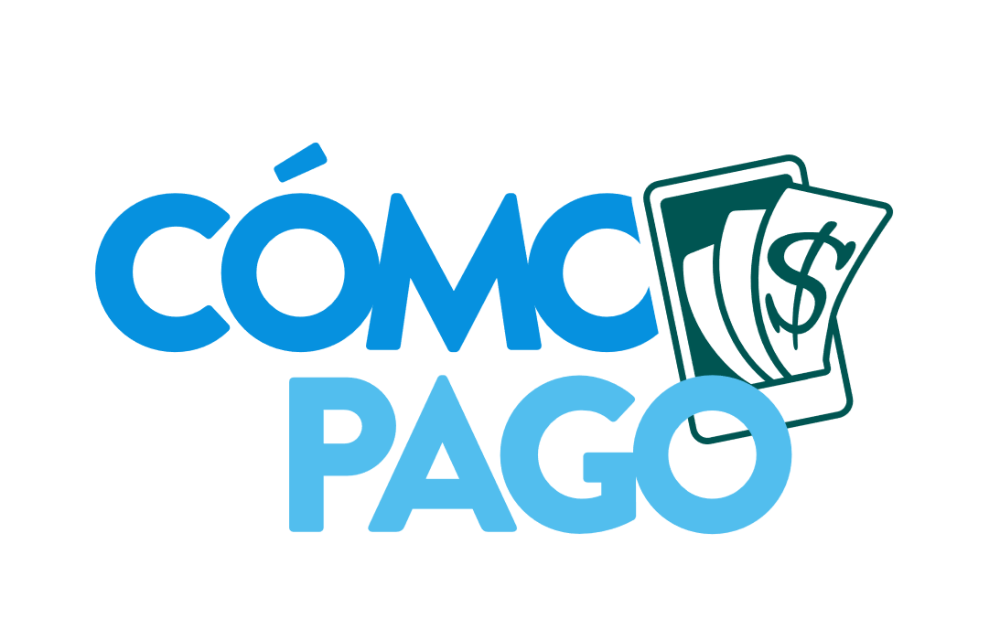
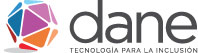
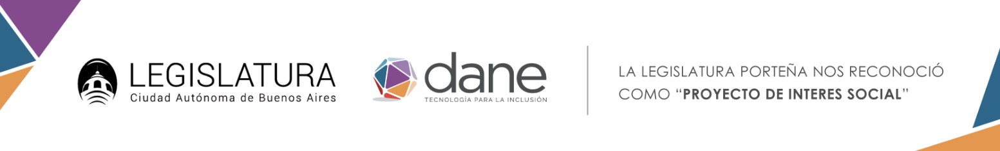
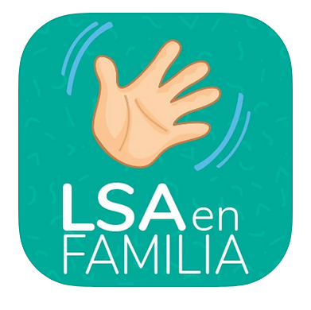

Como pago
Aprender el manejo del dinero con monedas y billetes con fotos reales de la Argentina. Pensada como apoyo a las dificultades de las personas con discapacidad intelectual a la hora de utilizar el dinero y pagar.

Desarrollamos aplicaciones para el aprendizaje de niños y jóvenes con discapacidad, junto a especialistas en educación y programadores.

Especialistas en educación y programadores trabajan en conjunto para crear aplicaciones adaptadas a las necesidades concretas de quienes las usan. Integramos el software a la educación para innovar en la manera de enseñar contenidos.
Conocé nuestra historia
Aprender el manejo del dinero con monedas y billetes con fotos reales de la Argentina. Pensada como apoyo a las dificultades de las personas con discapacidad intelectual a la hora de utilizar el dinero y pagar.
Se enfoca en que las personas de todas las edades aprendan las emociones, las reconozcan en el otro, las asocien en situaciones de la vida cotidiana y pongan en práctica formas de manejarlas.

Favorece la comunicación a través de señas básicas de Lengua de Señas Argentina (LSA) en las familias con niños sordos.
Rivadavia 717, 8º piso, (1002) Ciudad de Buenos Aires, República Argentina · Tel.: (54 11) 4342-8034